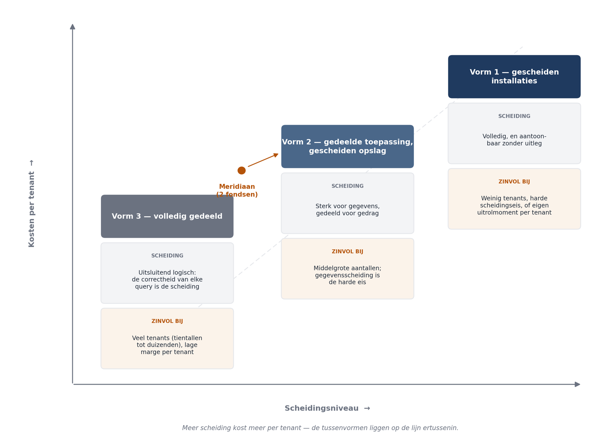

Deel 23 — Architectuur op schaal: multi-tenancy
Deelnemersreader
Cursus Softwarearchitectuur · Niveau 3 (CPSA-A certificeringstraject) · Deel 23 van 28
Positionering
Niveau 3 begeleidt het CPSA-A-certificeringstraject. Deze cursus is geen geaccrediteerde training en levert geen credit points; raadpleeg isaqb.org voor de actuele voorwaarden.
Twee sporen. Het casusspoor behandelt de multi-tenancyvraag van Meridiaan. Het eigen spoor betreft uw certificeringsopdracht — de opdrachten aan het eind van dit deel werken daaraan door.
Leerdoelen van dit deel
Na dit deel kunt u:
- de drie hoofdvormen van multi-tenancy beschrijven met hun kosten, en de tussenvormen herkennen;
- bepalen hoe hard de scheiding tussen partijen moet zijn, en op welke gronden;
- onderscheid maken tussen scheiding van gegevens, van gedrag en van verantwoording;
- multi-tenancy invoeren in een systeem dat er niet op is ontworpen;
- de gevolgen voor gebeurtenisopslag, aggregaten en koppelvlakken benoemen;
- de valkuilen herkennen die pas na de tweede tenant zichtbaar worden.
23.1 De vraag
Meridiaan neemt de uitvoering over van een tweede fonds: 85.000 deelnemers, eigen reglementen, eigen werkgevers, dertig jaar administratieve geschiedenis.
Wat er moet gebeuren: beide fondsen worden bediend vanuit één systeem, met gescheiden gegevens, gescheiden reglementen en gescheiden verantwoording. Twee systemen beheren is onbetaalbaar — dat was de businesscase van de overname.
De vraag die de architect moet beantwoorden: hoe hard scheidt u, waar, en wat kost dat?
Wat de vraag zwaar maakt is dat het systeem er niet op is ontworpen. Er was één fonds; de aanname “één reglementenstelsel” zit in het gebeurtenismodel, in de aggregaten en in het aanleverformaat. Alle drie zijn in deel 17 als onomkeerbaar gemarkeerd.
Dat is geen ontwerpfout. In deel 9 van niveau 1 leerde u het onderscheid: een ontwerpfout is een beslissing die met de toenmalige informatie beter had gekund. Er wás één fonds; ontwerpen voor meerdere zou speculatief zijn geweest. Dit is een gerealiseerd risico — en de maatregel is dus niet schuld bekennen maar hanteren.
23.2 Drie vormen van multi-tenancy
De vormen verschillen in waar de scheiding wordt gelegd, en zij verschillen ordes van grootte in kosten.
Vorm 1 — gescheiden installaties
Elke tenant krijgt een eigen draaiende instantie met eigen opslag. Eén codebase, meerdere installaties.
| Scheiding | Volledig, en aantoonbaar zonder uitleg |
| Kosten | Lineair met het aantal tenants: infrastructuur, uitrol, bewaking, patchen |
| Wijzigbaarheid | Elke wijziging moet naar elke installatie; versies lopen uiteen |
| Wanneer | Weinig tenants, harde scheidingseisen, of tenants die zelf over hun uitrolmoment gaan |
Vorm 2 — gedeelde toepassing, gescheiden opslag
Eén draaiende toepassing bedient alle tenants; elke tenant heeft een eigen database of schema.
| Scheiding | Sterk voor gegevens, gedeeld voor gedrag |
| Kosten | Beperkt lineair: opslag per tenant, maar één uitrol en één bewakingsopzet |
| Wijzigbaarheid | Eén uitrol voor iedereen — wat een voordeel is en een risico |
| Wanneer | Middelgrote aantallen, gegevensscheiding is de harde eis, gedrag mag gedeeld |
Vorm 3 — volledig gedeeld
Eén toepassing, één opslag, met een tenantaanduiding op elke rij en filtering in elke query.
| Scheiding | Uitsluitend logisch; de correctheid van elke query is de scheiding |
| Kosten | Laagst per tenant; schaalt naar duizenden |
| Wijzigbaarheid | Eén uitrol; geen versiedivergentie |
| Wanneer | Veel tenants, lage marge per tenant, geen harde scheidingseis |
De tussenvormen zijn in de praktijk het interessantst. Gedeelde toepassing met gedeelde opslag voor het merendeel, en gescheiden opslag voor de gegevens waarop een harde eis rust. Of: gedeeld, met één tenant apart omdat die het contractueel eist.

23.3 Hoe hard moet de scheiding zijn?
Dit is de kernvraag, en zij is niet technisch.
Vier gronden waarop de hardheid wordt bepaald:
1. Wettelijk en toezichtsgerelateerd. Voor pensioenuitvoering geldt dat het vermogen van fondsen gescheiden is en dat de verantwoording per fonds sluitend moet zijn. Wat dat precies betekent voor gegevensopslag, is een juridische vraag — en de architect stelt hem, hij beantwoordt hem niet.
2. Contractueel. Een fondsbestuur kan eisen dat gegevens fysiek gescheiden zijn, ongeacht of dat wettelijk moet. Dat is onderhandelbaar en het kost geld; die afweging hoort bij de directie.
3. Operationeel. Mag een fout bij fonds A het uitvoeringsproces van fonds B raken? Bij volledig gedeeld is het antwoord ja, en dat is bij de conversie van dertig jaar administratie een reëel risico.
4. Beheersbaarheid. Hoeveel tenants verwacht u? Bij twee is de lineaire kostenstijging van vorm 1 draaglijk; bij twintig niet.
Voor Meridiaan ligt de uitkomst niet vast en de afweging is de opdracht van dit deel. Wat wel vaststaat: de scheiding van verantwoording is hard — de jaarrekening per fonds moet sluitend zijn en aantoonbaar. Of dat gescheiden opslag vereist, is de vraag.
De valkuil is de hardheid overschatten. Volledige fysieke scheiding klinkt veilig en zij kost bij elke wijziging tijd, bij elke storing dubbele analyse, en bij elke uitrol coördinatie. Wie zonder grond voor vorm 1 kiest, betaalt jarenlang voor een zekerheid die niemand vroeg.
De valkuil is de hardheid ook onderschatten. Bij vorm 3 is de scheiding de correctheid van elke query. Eén vergeten filter en fonds A ziet gegevens van fonds B — en dat is bij persoonsgegevens een meldplichtig incident.
23.4 Drie soorten scheiding
Deze worden door elkaar gehaald en zij hebben verschillende oplossingen.
Scheiding van gegevens. Wie ziet wat. Op te lossen met opslagscheiding (vorm 1 of 2) of met filtering (vorm 3).
Scheiding van gedrag. Fonds A heeft andere reglementen dan fonds B. Een scheidingsmutatie verloopt anders, de ingangsdatumberekening verschilt, en de goedkeuringsregels wijken af.
Dit is voor Meridiaan de zwaarste, en zij is met opslagscheiding niet opgelost. Twee routes:
- Parametriseren. Het gedrag is hetzelfde, de waarden verschillen. Werkt zolang de verschillen in getallen en termijnen zitten.
- Uitbreidingspunten. Het gedrag zelf verschilt. Werkt, en het is de route waarlangs een systeem onbegrijpelijk wordt als u hem te vaak neemt.
De praktische lijn: parametriseren waar het kan, uitbreidingspunten waar het moet, en elke uitbreiding vastleggen met de reden. Een systeem met veertig uitbreidingspunten waarvan niemand weet waarom zij bestaan, is de moderne variant van de gedistribueerde modderbal.
Scheiding van verantwoording. De jaarrekening, de toezichtrapportage en de deelnemersinformatie moeten per fonds sluitend zijn en herleidbaar. Dit is grotendeels een gegevensvraag — elke gebeurtenis en elke boeking moet aan één fonds toewijsbaar zijn — en het is de eis die het gebeurtenismodel raakt.
23.5 Invoeren in een bestaand systeem
Het systeem kent geen fondsbegrip. Dat moet erin, en de volgorde is bepalend.
Stap 1 — het fondsbegrip introduceren. Een tenantaanduiding als domeinbegrip, niet als technisch veld. In de taal van het domein: elk dossier, elke mutatie, elke gebeurtenis hoort bij precies één fonds.
Stap 2 — de bestaande gegevens toewijzen. Alles wat er is, hoort bij fonds A. Dat is een migratie en zij is eenmalig — maar zij raakt de gebeurtenisopslag, en die is onveranderlijk.
Hier zit het scherpste probleem van dit deel. U kunt bestaande gebeurtenissen niet wijzigen om er een fondsaanduiding aan toe te voegen. Drie routes:
- Afleiden bij lezen. Gebeurtenissen zonder fondsaanduiding horen per definitie bij fonds A. Werkt, en het is een regel die u zeven jaar moet onthouden en in elke lezer moet implementeren.
- Een nieuw gebeurtenistype. Vanaf datum D bevatten gebeurtenissen een fondsaanduiding; daarvoor niet. Dat is de versiëringsaanpak uit deel 14, en zij is de zuiverste.
- Een aparte toewijzingstabel. Een naast de gebeurtenissen liggende registratie die elk dossier aan een fonds koppelt. Werkt, en zij introduceert een tweede bron van waarheid.
De tweede route is doorgaans de juiste, en zij illustreert waarom gebeurtenisversiëring in deel 14 zoveel aandacht kreeg: dit is precies het geval waarvoor die regels bestaan.
Stap 3 — filtering afdwingen. Bij vorm 2 en 3 moet elke query op fonds filteren. Dit is niet met discipline te doen — het is de fitness function-situatie uit deel 17 in zijn scherpste vorm. Eén vergeten filter is een datalek.
De maatregel: filtering onvermijdelijk maken, niet controleerbaar. Een gegevenstoegangslaag waarin de fondsfilter niet is over te slaan, is de enige vorm die standhoudt. Een bouwstraatcontrole is de tweede keus en zij vindt alleen wat zij herkent.
Stap 4 — koppelvlakken. Het aanleverformaat is afgestemd op de werkgevers van fonds A. Fonds B heeft eigen werkgevers met eigen systemen. Uit deel 13: het formaat is een published language en de migratietermijn wordt bepaald door de traagste afnemer.
De verstandige keuze is doorgaans het bestaande formaat uitbreiden met een fondsaanduiding en de werkgevers van fonds B daarop aansluiten, in plaats van twee formaten te onderhouden. Dat kost de werkgevers van fonds A een wijziging, en dat is onderhandelbaar.
23.6 Wat er misgaat na de tweede tenant
Multi-tenancy die met twee tenants werkt, breekt regelmatig bij de derde. Vier patronen die dan zichtbaar worden.
De verstopte aanname. Ergens in het systeem staat nog een aanname over één fonds — een rapportage die alle dossiers telt, een batch die zonder filter draait, een cache die tenantonafhankelijk is gevuld. Bij twee tenants valt het op; bij één tenant per definitie niet.
De gedeelde stamgegevens. Iets wat u als generiek beschouwde, blijkt fondsspecifiek: een lijst met redenen, een set statussen, een tekstsjabloon. Elke keer is het een kleine wijziging, en samen zijn zij de reden dat het derde fonds duurder is dan het tweede.
De prestatievermenging. Een zware batch van fonds B vertraagt het portaal van fonds A. Dit is dezelfde isolatievraag als in deel 13, nu tussen tenants in plaats van tussen diensten — en het is een reden om bij vorm 3 alsnog te scheiden op verwerkingsniveau.
De verantwoordingsvraag die niemand stelde. Bij de jaarafsluiting blijkt dat een gedeelde voorziening — bijvoorbeeld de berichtenverzending — kosten maakt die aan één fonds worden toegerekend terwijl beide ervan profiteren. Dat is geen technisch probleem en het komt wel uit de architectuur voort.
Wat u eraan doet: de derde tenant plannen terwijl u de tweede bouwt. Niet door hem te bouwen, maar door bij elke keuze de vraag te stellen: wat gebeurt er hier bij tenant drie? Dat kost weinig en het maakt de verstopte aannames zichtbaar op het moment dat zij goedkoop te repareren zijn.
23.7 De afweging voor Meridiaan
De verdedigbare uitkomst — en zij is niet de enige:
| Aspect | Keuze | Grond |
|---|---|---|
| Hoofdvorm | Vorm 2: gedeelde toepassing, gescheiden opslag per fonds | Verantwoording moet sluitend en aantoonbaar zijn; twee tenants maakt de opslagkosten draaglijk |
| Gedrag | Parametriseren waar mogelijk, uitbreidingspunten waar nodig, elk met vastgelegde reden | Reglementsverschillen zitten grotendeels in waarden |
| Gebeurtenissen | Nieuw gebeurtenistype vanaf datum D, met fondsaanduiding | Deel 14: onveranderlijkheid, versiëring, leescode zeven jaar |
| Filtering | Onvermijdelijk in de gegevenstoegangslaag | Eén vergeten filter is een meldplichtig incident |
| Koppelvlak | Bestaand formaat uitbreiden, niet dupliceren | Deel 13: één published language, migratietermijn onderhandelen |
| Prestatie-isolatie | Conversiebatch van fonds B gescheiden verwerken | Deel 13: dezelfde isolatiegrond als de conversiedienst |
De herzieningsgrens (deel 2): deze keuze wordt heroverwogen bij een derde fonds, of zodra een fondsbestuur fysieke scheiding contractueel eist. Bij meer dan vier fondsen verschuift de afweging richting vorm 3 met versterkte isolatie.
Wat deze keuze duur maakt, en dat hoort erbij: elke wijziging raakt beide fondsen tegelijk, dus elke uitrol vraagt afstemming met twee fondsbesturen. Dat is de prijs van gedeeld gedrag, en zij wordt betaald door de operatie en niet door de bouwers.
Samenvatting
- Drie hoofdvormen: gescheiden installaties, gedeelde toepassing met gescheiden opslag, en volledig gedeeld. Zij verschillen ordes van grootte in kosten, en de tussenvormen zijn in de praktijk het interessantst.
- Hoe hard de scheiding moet zijn, wordt bepaald door wettelijke, contractuele, operationele en beheersbaarheidsgronden — en de eerste twee zijn geen architectuurvragen.
- Overschat de hardheid niet: onnodige fysieke scheiding kost jarenlang. Onderschat haar ook niet: bij volledig gedeeld is één vergeten filter een meldplichtig incident.
- Drie soorten scheiding: gegevens, gedrag en verantwoording. Gedrag is de zwaarste en wordt niet opgelost met opslagscheiding.
- Parametriseren waar het kan, uitbreidingspunten waar het moet, elk met vastgelegde reden.
- Bij invoering in een bestaand systeem is de gebeurtenisopslag het scherpste probleem: bestaande gebeurtenissen zijn onveranderlijk. Een nieuw gebeurtenistype vanaf een datum is doorgaans de zuiverste route.
- Filtering moet onvermijdelijk zijn, niet controleerbaar. Dit is de fitness function-situatie in haar scherpste vorm.
- Wat breekt bij de derde tenant: verstopte aannames, gedeelde stamgegevens die fondsspecifiek blijken, prestatievermenging, en toerekeningsvragen. Plan de derde terwijl u de tweede bouwt.
Kernbegrippen
Multi-tenancy — meerdere gescheiden partijen bedienen vanuit één systeem.
Tenant — een partij met eigen gegevens, gedrag en verantwoording; bij Meridiaan een fonds.
Scheiding van gegevens, gedrag en verantwoording — respectievelijk wie wat ziet, welke regels gelden, en hoe wordt verantwoord.
Parametriseren tegenover uitbreidingspunt — verschillen in waarden, tegenover verschillen in gedrag.
Verstopte aanname — een niet-vastgelegde veronderstelling over één tenant die pas bij de tweede of derde zichtbaar wordt.
Verder lezen
- Ford, Richards e.a., Software Architecture: The Hard Parts — de hoofdstukken over gegevensscheiding en gedeelde diensten.
- Literatuur over meerdere-mandanten-architectuur in uw eigen technologiestapel; de invulling is stapelspecifiek.
- Deel 14 van deze cursus over gebeurtenisversiëring, en deel 17 over onomkeerbaarheid.
- Uw eigen sectorkaders over vermogensscheiding en verantwoording per fonds; die zijn leidend.
Ductus B.V. · Cursus Softwarearchitectuur · Niveau 3, deel 23 · Deelnemersreader